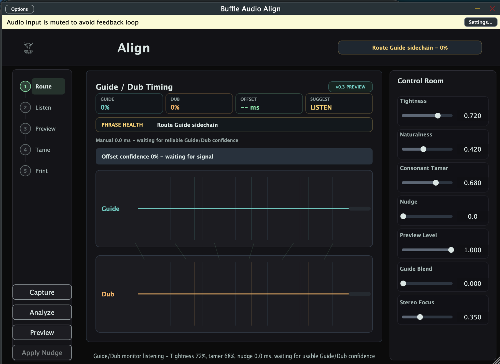

Route the guide
Use the Guide as sidechain reference and keep the Dub as the editable performance.
hostin.tech audio lab / v0.3.0
Route the Guide, play the Dub, wait for confidence, then preview a safe nudge before the performance gets flattened.
signal-first interface
Guide on sidechain, Dub on the main input, offset in milliseconds, and confidence before any nudge becomes actionable.

workflow
Use the Guide as sidechain reference and keep the Dub as the editable performance.
Envelope and onset cues produce a signed global timing estimate you can reason about.
Audition manual or suggested delay-safe movement before committing to deeper editing.
The roadmap moves toward consonant control and A/B preview without sterile warping.
engine
road to v1
V1 is focused on safe nudge, trust meter alignment, and vocal-stack-specific consonant control before heavier offline warping.
release
Standalone app, VST3, AU, local installer package, and staged bundles are available from GitHub Releases.
download
The current build is useful for local verification and workflow testing. Public distribution still needs Developer ID signing and notarization.
support
Support goes toward signing, DAW compatibility passes, DSP work, and the next build polish sprint.